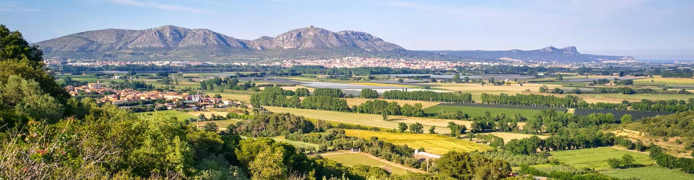

Ruta · Montgrí
En aquesta breu però encisadora ruta farem una passejada pel poble de Gualta , endinsant-nos en els seus carrerons i descobrint la història, com el Molí de Gualta datat del segle XII . Realitzarem…